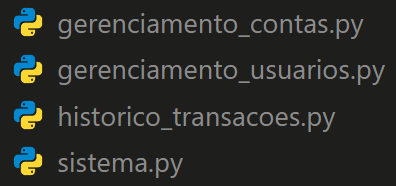

Módulos customizados#
Nós já aprendemos sobre funções e módulos nativos. Agora é hora de elevar o nível e aprender a criar nossos próprios módulos. Vamos começar com um exemplo de projeto pra explicar e contextualizar sobre módulos customizados.
Nota (múltiplos arquivos .py)
Neste capítulo, vamos trabalhar com múltiplos arquivos .py. Para fins didáticos, no início de cada código eu vou colocar o nome do arquivo no qual o código está sendo escrito. Por exemplo, se o código está sendo escrito no arquivo estoque.py, eu vou colocar o seguinte comentário no início do código: # estoque.py. Ou então se o arquivo está dentro de uma pasta chamada funcoes, por exemplo, eu vou informar o caminho relativo do arquivo da seguinte forma: # funcoes/estoque.py. Preste atenção nesses comentários para saber em qual arquivo o código está sendo escrito.
Isso é apenas para fins didáticos, pois no mundo real, você não precisa colocar tais comentários.
O projeto#
Vamos começar com um exemplo de projeto de um sistema de gerenciamento de vendas online simulando um e-commerce.
# sistema_bancario.py
usuarios = {}
def registrar_usuario(nome: str) -> None:
usuarios[nome] = {"saldo": 0, "transacoes": []}
print(f"Usuário {nome} registrado com sucesso!")
def verificar_saldo(nome: str) -> int:
return usuarios[nome]["saldo"]
def depositar(nome: str, quantia: int) -> None:
usuarios[nome]["saldo"] += quantia
usuarios[nome]["transacoes"].append(f"Depositou {quantia}")
print(f"Depositou {quantia} na conta de {nome}.")
def sacar(nome: str, quantia: int) -> None:
if quantia > usuarios[nome]["saldo"]:
print("Saldo insuficiente!")
else:
usuarios[nome]["saldo"] -= quantia
usuarios[nome]["transacoes"].append(f"Sacou {quantia}")
print(f"Sacou {quantia} da conta de {nome}.")
# Histórico de Transações
def mostrar_transacoes(nome: str) -> list:
return usuarios[nome]["transacoes"]
# Descomente a linha abaixo para capturar do terminal um nome
# nome = input("Digite seu nome para registrar: ")
nome = "Henrique"
registrar_usuario(nome)
while True:
print("1. Verificar Saldo")
print("2. Depositar")
print("3. Sacar")
print("4. Mostrar Transações")
print("5. Sair")
# Descomente a linha abaixo para capturar do terminal uma opção
# opcao = int(input("Escolha uma opção: "))
opcao = 1
if opcao == 1:
print(f"Seu saldo é: {verificar_saldo(nome)}")
# Remova a instrução break para o loop funcionar
break
elif opcao == 2:
quantia = float(input("Digite a quantia para depositar: "))
depositar(nome, quantia)
# Remova a instrução break para o loop funcionar
break
elif opcao == 3:
quantia = float(input("Digite a quantia para sacar: "))
sacar(nome, quantia)
# Remova a instrução break para o loop funcionar
break
elif opcao == 4:
print(f"Transações: {mostrar_transacoes(nome)}")
# Remova a instrução break para o loop funcionar
break
elif opcao == 5:
print("Até mais!")
# Este break é o de saída do loop! Não remova!
break
else:
print("Opção inválida. Tente novamente.")
Usuário Henrique registrado com sucesso!
1. Verificar Saldo
2. Depositar
3. Sacar
4. Mostrar Transações
5. Sair
Seu saldo é: 0
Tome o tempo que for necessário e leia o código acima. Nesta altura do livro, não há nada acima que não tenha sido ensinado aqui no livro. Não continue a leitura até que você tenha entendido a ideia do projeto. Não se preocupe em entender cada detalhe do código, o importante é ter uma visão geral do que está sendo feito. Se você não entendeu algo, volte e revise os capítulos anteriores referentes ao tema que você não entendeu.
Separando o projeto em módulos#
Conforme vimos no final do código, ele funciona, mas o projeto está um pouco longo (mais que 70 linhas) e acaba ficando um pouco confuso e difícil de manter. Vamos dividir o código em módulos customizados para facilitar a manutenção e organização do código.
Se observarmos o nosso projeto, ele contém alguns grandes blocos:
Controlar e registrar usuários do sistema bancário
Realizar operações na conta bancária (saque, depósito, ver saldo)
Ver o histórico de transações
Fluxo principal do sistema (escolha e execução das operações)
Dada essa divisão, vamos criar um módulo para cada um desses blocos. Cada módulo vai ser um arquivo .py separado. Vou criar os sequintes arquivos (a princípio em branco):
gerenciamento_usuarios.py
gerenciamento_contas.py
historico_transacoes.py
sistema.py
Cada um deles vai conter um dos blocos acima. Vamos começar com o arquivo gerenciamento_usuarios.py:
# gerenciamento_usuarios.py
usuarios = {}
def registrar_usuario(nome):
usuarios[nome] = {"saldo": 0, "transacoes": []}
print(f"Usuário {nome} registrado com sucesso!")
Até aqui nenhuma novidade. O que vem a seguir representa a importação dos dados em outro módulo.
# gerenciamento_contas.py
from gerenciamento_usuarios import usuarios
def verificar_saldo(nome):
return usuarios[nome]["saldo"]
def depositar(nome, quantia):
usuarios[nome]["saldo"] += quantia
usuarios[nome]["transacoes"].append(f"Depositou {quantia}")
print(f"Depositou {quantia} na conta de {nome}.")
def sacar(nome, quantia):
if quantia > usuarios[nome]["saldo"]:
print("Saldo insuficiente!")
else:
usuarios[nome]["saldo"] -= quantia
usuarios[nome]["transacoes"].append(f"Sacou {quantia}")
print(f"Sacou {quantia} da conta de {nome}.")
Em gerenciamento_contas.py, logo na primeira linha, estamos importando do módulo gerenciamento_usuarios a variável usuarios.
Vamos seguir com a divisão.
# historico_transacoes.py
from gerenciamento_usuarios import usuarios
def mostrar_transacoes(nome):
return usuarios[nome]["transacoes"]
E, finalmente, o arquivo sistema.py:
# sistema.py
from gerenciamento_contas import depositar, sacar, verificar_saldo
from gerenciamento_usuarios import registrar_usuario
from historico_transacoes import mostrar_transacoes
nome = "Henrique"
registrar_usuario(nome)
while True:
print("1. Verificar Saldo")
print("2. Depositar")
print("3. Sacar")
print("4. Mostrar Transações")
print("5. Sair")
# Descomente a linha abaixo para capturar do terminal uma opção
# opcao = int(input("Escolha uma opção: "))
opcao = 1
if opcao == 1:
print(f"Seu saldo é: {verificar_saldo(nome)}")
# Remova a instrução break para o loop funcionar
break
elif opcao == 2:
quantia = float(input("Digite a quantia para depositar: "))
depositar(nome, quantia)
# Remova a instrução break para o loop funcionar
break
elif opcao == 3:
quantia = float(input("Digite a quantia para sacar: "))
sacar(nome, quantia)
# Remova a instrução break para o loop funcionar
break
elif opcao == 4:
print(f"Transações: {mostrar_transacoes(nome)}")
# Remova a instrução break para o loop funcionar
break
elif opcao == 5:
print("Até mais!")
# Este break é o de saída do loop! Não remova!
break
else:
print("Opção inválida. Tente novamente.")
Quem permite reutilizar funções, variáveis e outras coisas de módulos são as linhas de importações, como em sistema.py:
# sistema.py
from gerenciamento_contas import depositar, sacar, verificar_saldo
from gerenciamento_usuarios import registrar_usuario
from historico_transacoes import mostrar_transacoes
...
Essas linhas importam as funções depositar, sacar, verificar_saldo, registrar_usuario e mostrar_transacoes dos respectivos módulos. Cada módulo representa um arquivo .py.
Se você executar o script sistema.py, o projeto vai funcionar da mesma forma que antes, mas agora está organizado em módulos customizados. Cada módulo é responsável por uma parte do projeto.
No final a organização do nosso projeto ficou conforme a imagem abaixo:
Visão geral#
Poderíamos avançar no tema e aprofundar ainda mais, mas não vamos. A ideia principal é que você compreenda o conceito básico da divisão em módulos, cada um com sua própria responsabilidade.
É possível dividir de várias formas, e não existe uma regra sobre como fazer tal divisão. Normalmente a divisão é baseada em responsabilidades e funcionalidades. Cada módulo deve ser responsável por uma parte ou escopo específico. E quem define isso é você, meu caro leitor! Aqui assumo que é necessário um pouco de criatividade para enxergar tais divisões, sim. Eu nunca disse que quem programa não precisa ser criativo… 😉
É possível organizar ainda o projeto não só em módulos (arquivos .py separados) mas também em pastas e subpastas. Mas, por enquanto, vamos ficar com o mais simples.
Conclusão#
Vimos ao longo deste capítulo um projeto pronto, feito em um único arquivo e aprendemos a dividí-lo em módulos e trabalhar com importações para facilitar a organização do código. A ideia é que você possa aplicar esses conceitos em seus projetos futuros. A organização do código é tão importante quanto o código em si.
No próximo capítulo, vamos ter uma visão geral do funcionamento de módulos terceiros e como instalar e usar esses módulos em nossos projetos. Até lá!